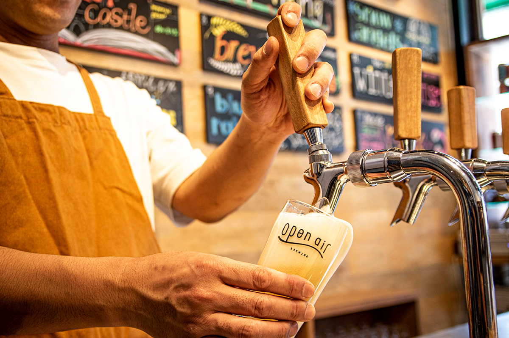
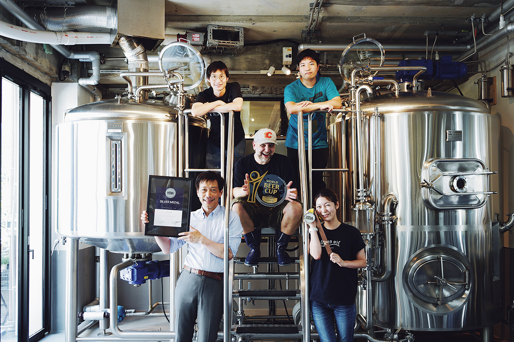
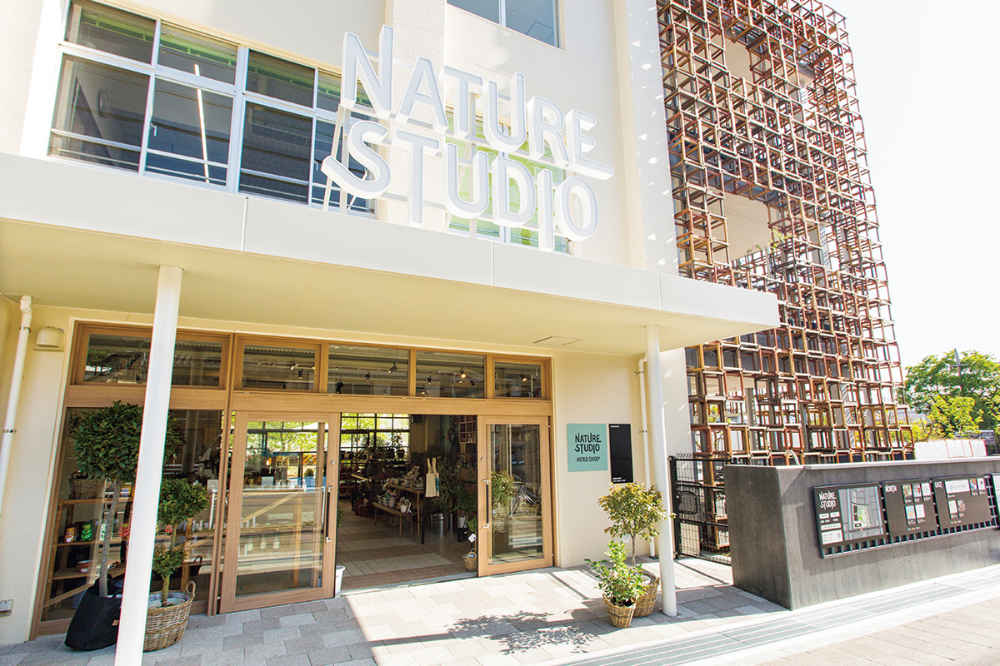
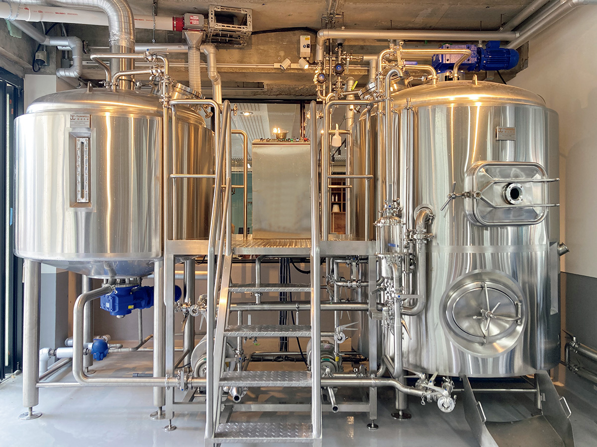
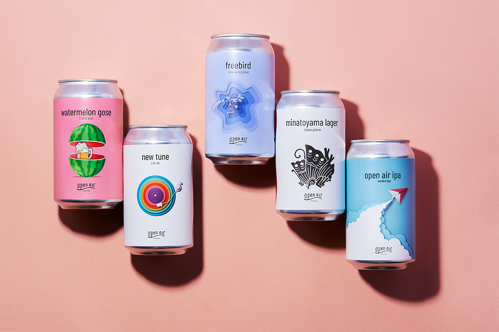
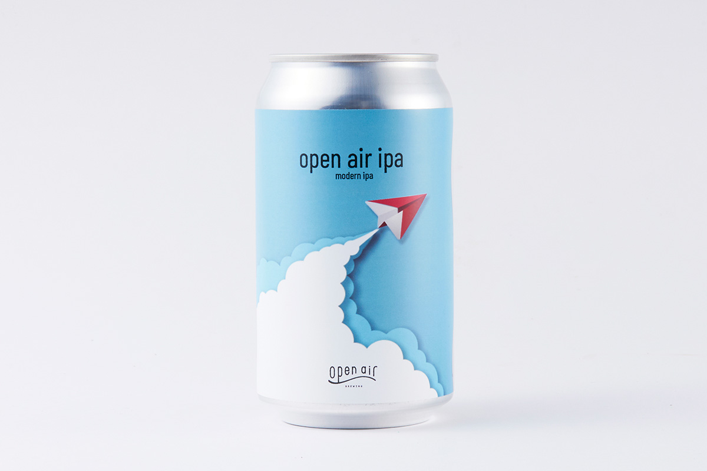
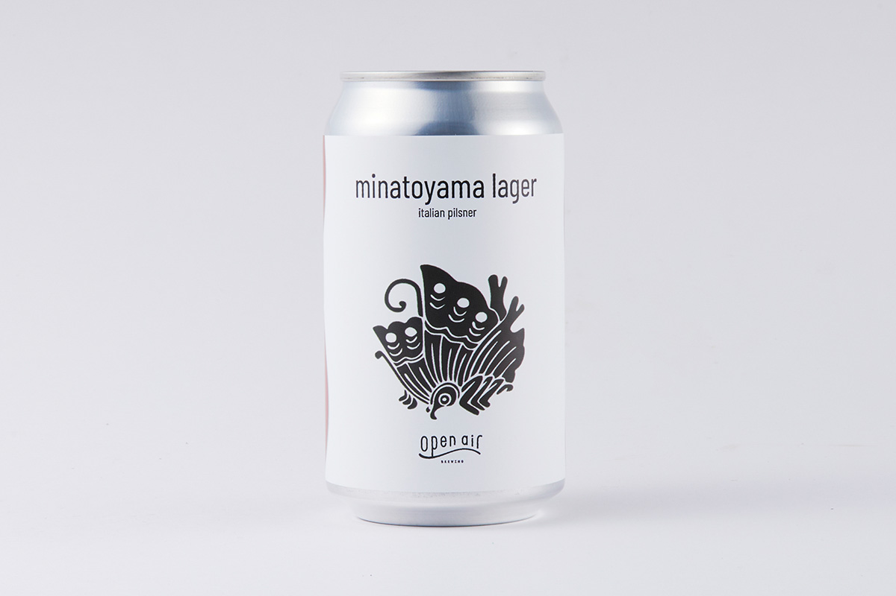
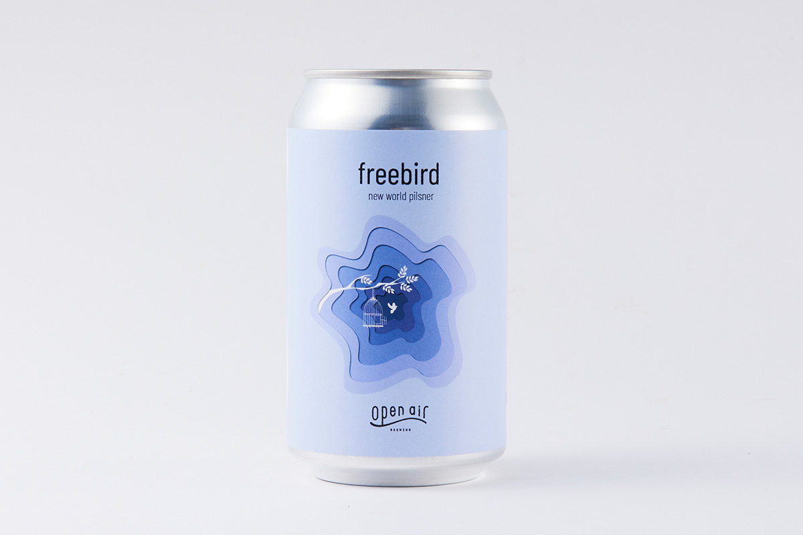
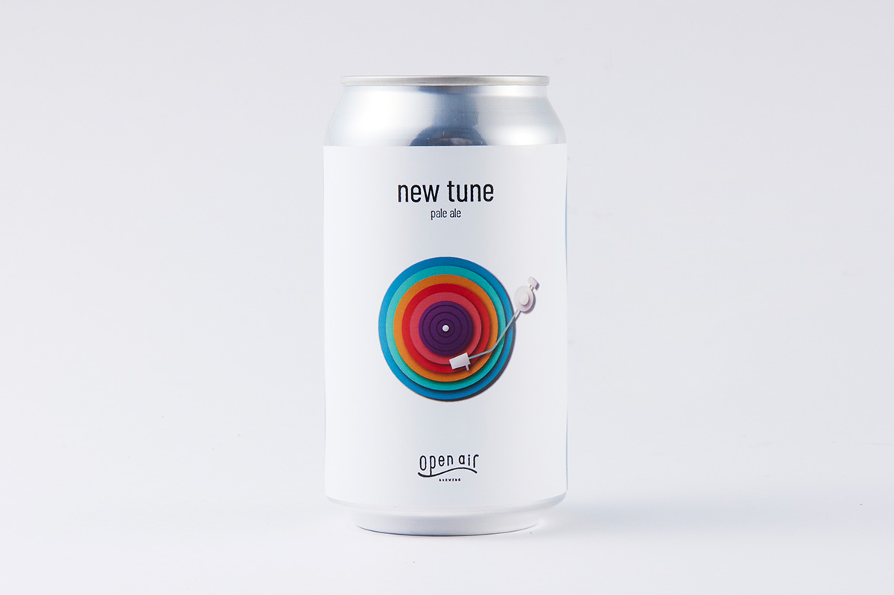
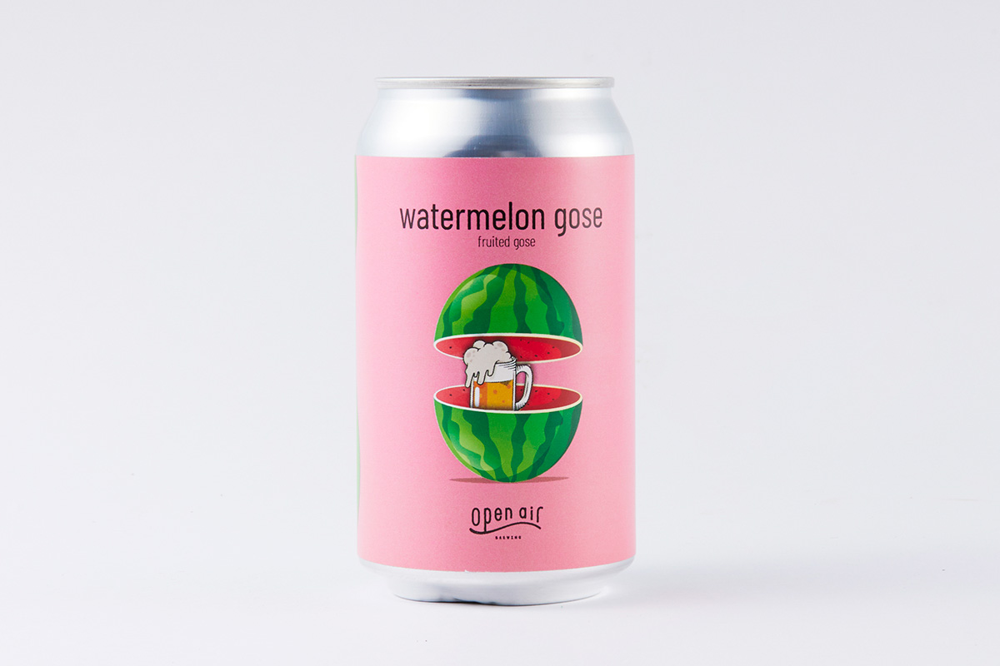

Префектура Хёго · Кобе · пиво
Пиво под открытым небом: пивоварня «Опен эйр» в бывшей школе Кобе

В Кобе пиво варят в бывшей школьной столовой. Пивоварня «Опен эйр» (open air) выросла внутри комплекса, устроенного в закрытой начальной школе, и задумана как место, открытое для всех, даже для тех, кто не пьёт.
Идея
Пиво, придуманное для разговоров на улице

«Опен эйр» хочет сделать Кобе точкой, откуда расходится культура открытых экспериментов с пивом и новыми стилями. Команда здесь международная, и во главе варки стоит главный пивовар, приехавший из-за рубежа.
Место
Пивоварня в школьной столовой

Начальную школу Минатояма в Кобе закрыли, а её здание превратили в общественный комплекс «Нейчер студио» (NATURE STUDIO). Одним из тех, кто его запускал, был Такэхидэ Мураками, глава строительной компании. Однажды он сообразил: в бывшей школьной кухне, где готовили обеды для детей, уже есть хорошая канализация, а значит, там можно варить пиво. Так и началась пивоварня «Опен эйр».

В архитектуре Мураками всегда интересовали не сами здания, а то, как ими пользуются. Сотрудница отдела продвижения знала его задолго до появления пивоварни и рассказывает, что параллельно со строительным бизнесом он много лет ставил в Кобе общественные эксперименты.
«Самый известный из них это библиотека под открытым небом в городском парке, где раньше почти никого не было. Там он заметил, что на открытом воздухе люди любого возраста начинают разговаривать друг с другом сами собой»
сотрудница отдела продвижения «Опен эйр»
В помещении люди обычно держатся своих: в кафе собираются домохозяйки, в баре офисные работники. На улице же легко заговорить с незнакомцем. По словам той же сотрудницы, отсюда и пошла пивоварня: если в таком пространстве есть пиво, людям становится ещё уютнее, и эта мысль легла в основу всего бренда. Пиво у Мураками, как и здания, родилось из опыта самого места. Вокруг него собрались люди, которые давно хотели с ним работать, и рассказчица была одной из них: она согласилась, не раздумывая.
Вкус
Пиво для всех, а не для знатоков
Цель пивоварни в пиве, открытом для каждого. В 2025 году в мире крафта были в моде крепкие сорта, а в «Опен эйр» большая часть пива держится в пределах 5–6,5%. Новинки выходят часто.
«Каждую неделю мы выпускаем один-два новых сорта, так что своё пиво найти несложно»
сотрудница отдела продвижения «Опен эйр»
Даже одно лето здесь раскладывают на оттенки: от свежего начала сезона до затянувшейся августовской жары, и каждому моменту достаётся свой сорт. Вкус каждого пива главный пивовар переводит в рисунок на этикетке, а Мураками добавляет к нему стихи.
Иногда вкус выходит совсем не таким, как ожидали, и рисунок с ним не сходится. Но в этом, считают в пивоварне, и есть азарт крафта. Пиво остаётся удовольствием для взрослых, но детям и тем, кто не пьёт, здесь тоже есть чем заняться: можно смотреть, как варят, и просто побыть в этой обстановке. Такое разнообразие людей вокруг пива «Опен эйр» и видит своим будущим.
Сорта
Пять банок «Опен эйр»

«Опен эйр ИПА» (open air ipa)
Флагман пивоварни, современный IPA из смеси нескольких хмелей. Пиво не сладкое, но насыщенное: сначала травянистый аромат, затем цитрусовые ноты. Крепость 6%, банка 365 мл стоила 770 иен в 2025 году.

«Минатояма лагер» (minatoyama lager)
Итальянский пилснер, по вкусу близкий к обычному магазинному лагеру, поэтому с него удобно начинать знакомство с крафтом. Рисунок на этикетке навеян японским оригами и вырезанием из бумаги. Крепость 5,5%, 770 иен за банку в 2025 году.

«Фрибёрд» (freebird)
Пилснер в стиле Нового Света, выпущенный в июле 2025 года. Его варят на двух сортах хмеля, пьётся он легко, с мягкой кислинкой, похожей на лимонную, и лёгкой горчинкой. Крепость 6%, 850 иен за банку в 2025 году.

«Нью тюн» (new tune)
Светлый эль на хмеле талус, который разные люди описывают совсем по-разному. Если пить его не слишком холодным и не спеша, вкус постепенно меняется. Крепость 6%, 770 иен за банку в 2025 году.

«Вотермелон гозе» (watermelon gose)
Вариация на тему немецкого гозе, пива с кориандром и солью. Здесь в него добавляют арбузное пюре, и такое пиво хорошо пить после ванны. Крепость 5%, 700 иен за банку в 2025 году.

«Опен эйр», пивоварня Минатояма
- Адрес
- префектура Хёго, Кобе, район Хёго, Юкигосё-тё, 2-18-102
- Цены / Вход
- пиво от 700 до 850 иен за банку 365 мл; осмотр пивоварни возможен вне сезона наплыва
- Сайт
- openair.beer
Фото: Сихо Акияма.